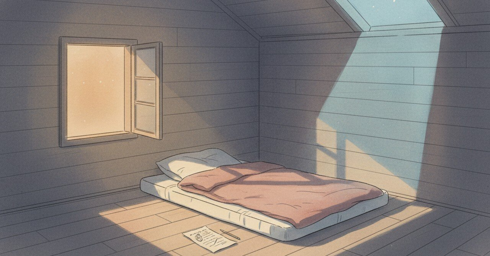

21時のロフトで、歌を歌っていた自分に気づいた夜

2026-04-24、夜の自分の静けさを思い出していた。歌を歌っていた、という記憶は、もう自分の中にはない。
今日の現場
最近、夜にパソコンを閉じる時間が遅い
閉じたあとも頭のスイッチが落ちない
今日は少し早めに切り上げた
音のない時間が落ち着かない
逆に、その落ち着かなさが何かを伝えている気がした
あの頃と今
2024年8月19日、21時前にロフトに上がっていた。「こんなに早く寝床につけるのはどれ位ぶりだろうか」と書いてある。やることが無い、寝たい訳でもない。でもゆとりの時間が必要だと感じた結果、パソコンを開かずにロフトにいる、と。自然と歌を歌い、自分がリラックスできていることがわかる、すごく心地よい気分だ、と書いた夜だった。
同じ日の日記には、前日のToDoリスト作成のおかげで、高速バス車内でシフト作成とモデルワークを完了できた、とも書いていた。夕方までに引越し準備を終わらせる、と決めて動いたから、今の「のんびりした時間」を確保できたのだと思う、と。翌日は朝から防犯訓練に参加してマークイズの皆さんの顔を見たい、と続いている。「マークイズは温かい」と書いていた。
歌を歌えるロフトの夜は、前日の段取りと、翌日の楽しみに挟まれて、いまこの瞬間として成立していた。
頭の中
ゆとりの時間が必要だと感じられる感度は、あの夜がピークだったのかもしれない。今は忙しさに戻ってしまった。
ただ、歌を歌う代わりに、毎日書く習慣ができた。形が変わっただけで、自分をリラックスさせる回路は別のルートで生き続けているのかもしれない。書くという行為は、歌うほど自由ではないけれど、段取りの締めとしては、少し似ている。
まだ途中のこと
歌を歌う夜は、またいつか来るのか。来ないほうが自然なのか。まだ決められないまま、ロフトのない部屋で過ごしている。
続きは次の夜に書きます。
#日記 #ひとり時間 #夜の時間 #自己観察 #くつろぎ